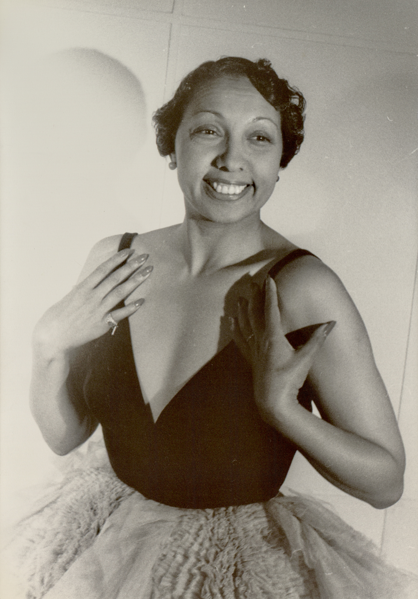
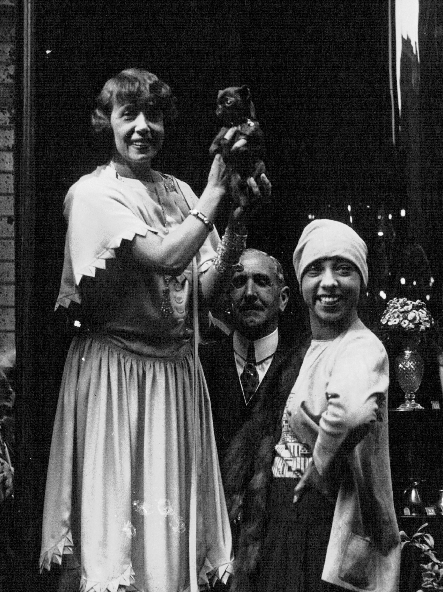
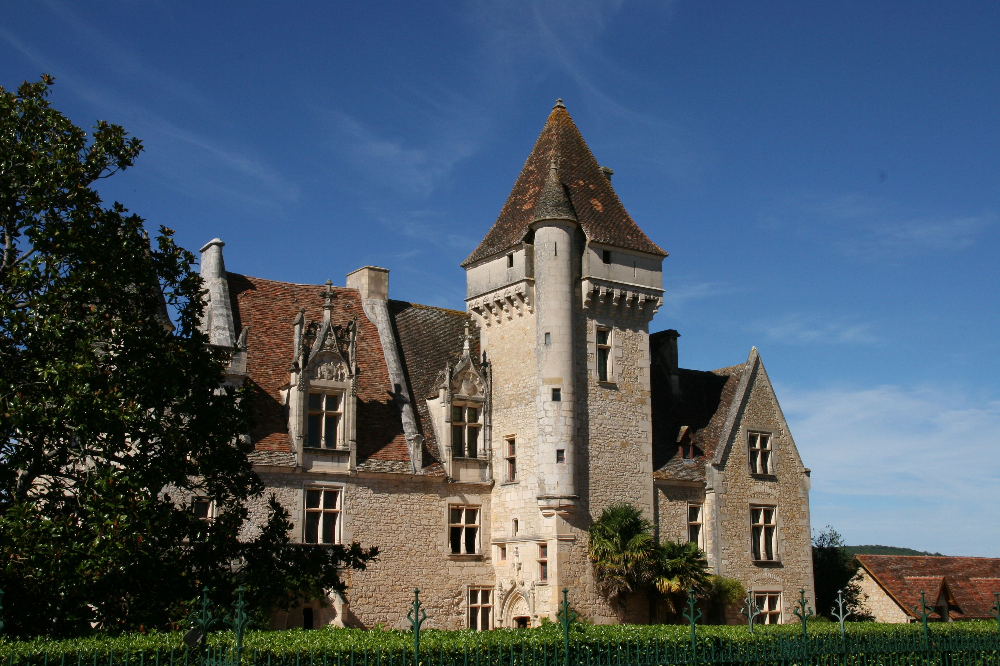
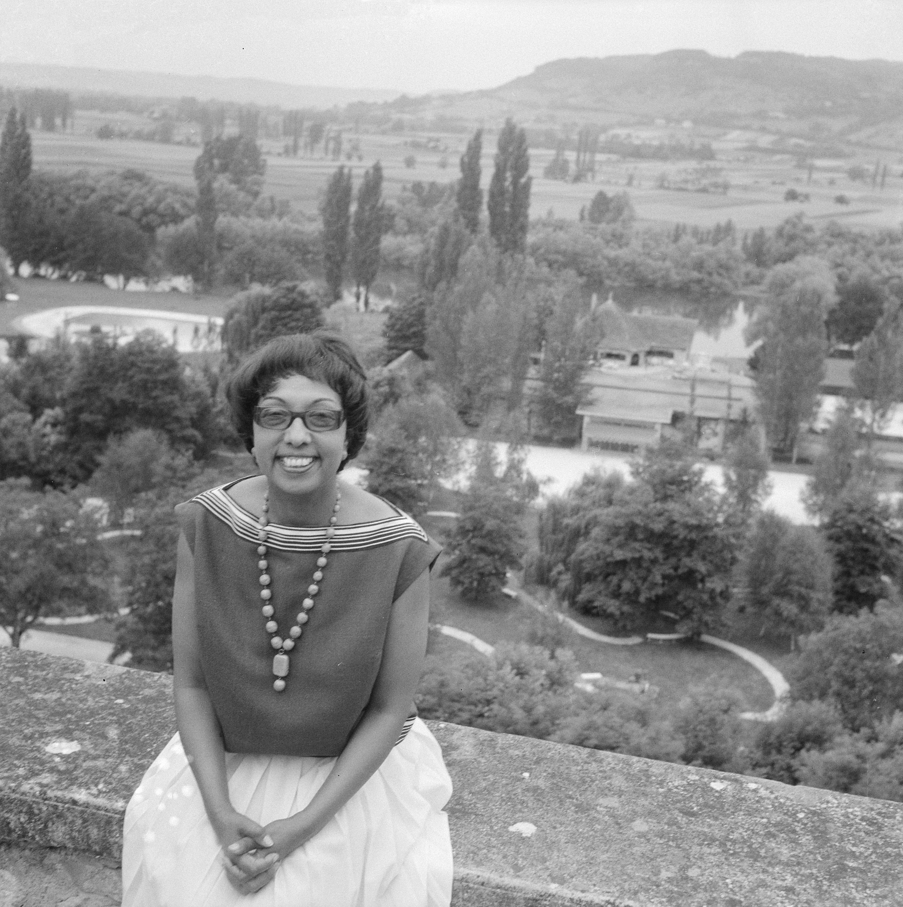
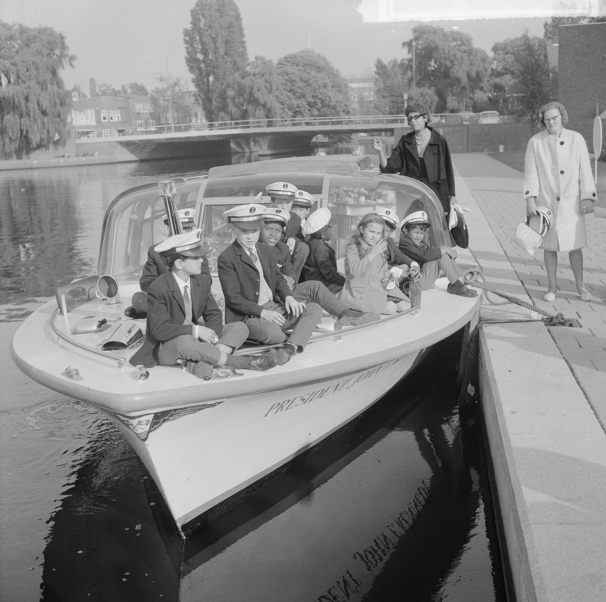
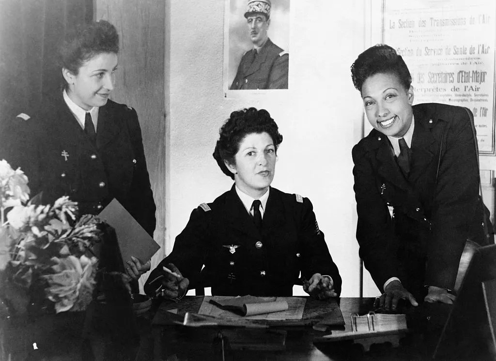
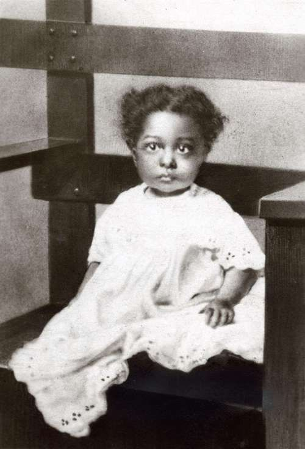
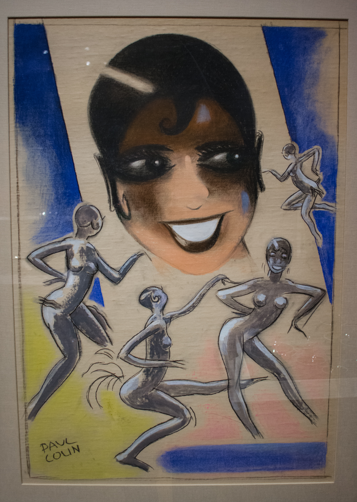
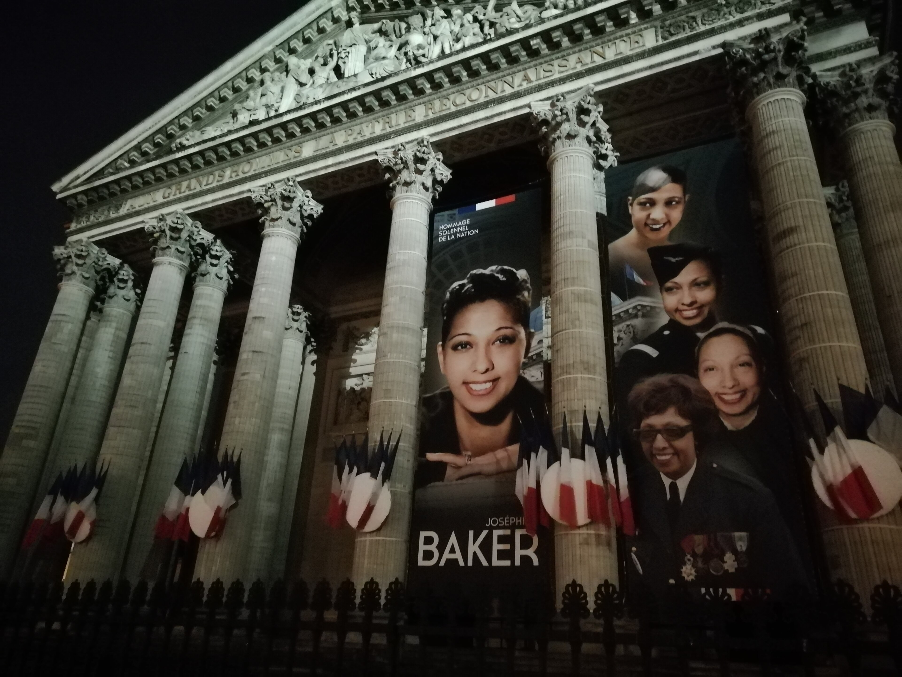

Artista
Mais de cinquenta anos de carreira entre music-hall, cinema e discos, do Paris dos anos 1920 ao fim dos anos 1970.
EXPODOM · Colégio Dom Bosco · 9º ano
Arte, resistência e diversidade
Uma exposição sobre a artista que atravessou palcos, uma guerra e duas culturas — e não deixou de perguntar quem tinha o direito de ocupar cada espaço.
Nesta exposição
Quem foi Arte e racismo A Rainbow Tribe Guerra e resistência Legado
Integrantes
Nycolas · Murilo Dias · João Henrique · Vinicius Mateus · Vinicius Soarez

Quem foi Josephine Baker?
Pergunta 01Quem foi Josephine Baker e em quais áreas atuou?
Josephine Baker foi dançarina, cantora, atriz e uma das artistas mais famosas do século XX. Nascida em St. Louis, nos Estados Unidos, em 1906, construiu quase toda a carreira na França, onde era conhecida como Joséphine Baker.
Além da fama no palco, ela participou da Resistência Francesa durante a Segunda Guerra Mundial e usou sua visibilidade para combater o racismo. Morreu em Paris, em 12 de abril de 1975, aos 68 anos.
Fontes: Encyclopædia Britannica; PBS NewsHour; FRANCE 24.
A artista e a questão racial
Pergunta 02Como sua trajetória artística se relaciona com questões raciais e sociais?
Josephine cresceu nos Estados Unidos em uma época em que a segregação estava na lei: escolas, hotéis e partes dos teatros eram separados para pessoas brancas e negras. Ainda menina, trabalhou em casas de famílias brancas para ajudar a mãe.
Em 1925, aos 19 anos, foi para Paris. Lá, o racismo também existia, mas não estava escrito na lei — e esse espaço abriu a porta para a carreira dela. O sucesso deu autonomia: ela escolhia o palco, os papéis e o próprio dinheiro.
Com essa posição, passou a usar a dança, a música e a própria imagem para desafiar o jeito como mulheres negras eram representadas.
A trajetória dela não se resume à imagem de dançarina: havia uma mulher negra no controle da própria carreira e, com o tempo, uma voz pública contra o racismo.
Fontes: Encyclopædia Britannica; Smithsonian NMAAHC.

A família que ela montou
Pergunta 03Como sua experiência familiar e a adoção de crianças de diferentes origens aparecem em sua trajetória?
Depois da guerra, Josephine começou a adotar crianças. Entre 1954 e 1964, foram doze, de diferentes países e religiões, criadas por ela e pelo marido, Jo Bouillon, no Château des Milandes, na região de Dordogne, na França.
Ela chamava a família de Rainbow Tribe — Tribo Arco-Íris. A ideia era simples e ambiciosa ao mesmo tempo: mostrar que crianças de diferentes cores, continentes e religiões podiam crescer juntas como irmãos.
Nota da equipe. As fontes divergem sobre detalhes da origem de cada criança (país, religião e ano). Por isso não montamos uma lista país por país: mantivemos apenas o que é confirmado por mais de uma fonte.
Fontes: Encyclopædia Britannica; THE CONVERSATION.



Família, cuidado e diversidade
Pergunta 04O que significa discutir família, cuidado e pertencimento em uma sociedade diversa?
A Rainbow Tribe não era uma família comum — e é justamente por isso que ela nos faz pensar.
Uma família não precisa ser formada só por laços de sangue. Cuidar, proteger e dar um lugar no mundo também constroem uma família: é o que Josephine fez ao acolher doze crianças de origens diferentes.
O exemplo dela mostra ainda que diferenças culturais e religiosas não precisam atrapalhar relações de afeto e respeito. Em uma sociedade diversa, conviver com o diferente é um exercício diário — na escola, na família e na rua.
Reflexão da equipe
Hoje existem muitas formas de família: adotiva, reconstituída, monoparental, escolhida. O que faz uma família ser família é o vínculo que existe entre as pessoas — não o formato.
Fontes: Encyclopædia Britannica; THE CONVERSATION.
Resistência
Pergunta 05Qual foi sua atuação durante a Segunda Guerra Mundial e em defesa de direitos?
A Segunda Guerra Mundial (1939–1945) opôs parte da Europa ao nazismo na Alemanha. Quando a França foi invadida, em 1940, Josephine — já cidadã francesa — escolheu ficar e ajudar.
Nota de pesquisa. Os relatos sobre a forma exata de passar as mensagens variam entre as fontes. Descrevemos apenas o que aparece em documentos desclassificados e em testemunhos registrados por biógrafos e instituições.
Fontes: FRANCE 24; CIA; Encyclopædia Britannica.

Condecorações
O sucesso não apagou o preconceito
Pergunta 06Que barreiras uma mulher negra enfrentou em seu contexto histórico?

Fama e dinheiro não protegem ninguém do racismo. A vida de Josephine mostra isso com clareza — e mostra também que a resposta a essa realidade pode ser a arte e a recusa.
Na Marcha sobre Washington, Josephine foi a única mulher a discursar no ato, vestindo o uniforme da força aérea francesa, com as condecorações da guerra.
Fontes: FRANCE 24; PBS NewsHour; Smithsonian NMAAHC.
Arte como forma de transformação social
Pergunta 07Como cultura e arte podem ser instrumentos de transformação social?
A arte amplia vozes, mostra gente que nem sempre aparece e faz o público pensar. Josephine usou dança, música, cinema e sua projeção internacional para defender a igualdade e abrir caminhos para outras artistas negras.
Pergunta da equipe: quem aparece no palco muda quem se reconhece na plateia?

Fontes: Encyclopædia Britannica; Smithsonian NMAAHC.
Legado
Pergunta 08Que mensagem sobre diversidade e convivência queremos deixar ao visitante?
Não é uma lista de elogios: é um retrato de uma pessoa que teve papéis diferentes na mesma vida.
Mais de cinquenta anos de carreira entre music-hall, cinema e discos, do Paris dos anos 1920 ao fim dos anos 1970.
Construiu na França uma carreira que poucos conseguem, em qualquer época, e virou um dos rostos mais conhecidos do século XX.
Atuou no serviço de inteligência francês durante a Segunda Guerra e recebeu medalhas militares por isso.
Recusou-se a se apresentar em plateias segregadas e discursou na Marcha sobre Washington, em 1963.
Transformou a convivência entre culturas em um projeto público que ainda é discutido por historiadores.
Doze crianças de origens diferentes criadas no Château des Milandes, em Dordogne.

2021 · Panthéon, Paris
Em 30 de novembro de 2021, Josephine Baker se tornou a primeira mulher negra a ser homenageada no Panthéon, o mausoléu francês que guarda personalidades consideradas importantes para a história do país.
Por que ainda estudamos ela? Porque a trajetória dela junta arte, história, guerra, racismo e família — temas que continuam vivos hoje.
Fontes: PBS NewsHour; THE GUARDIAN.
Encerramento
Pergunta 08Que mensagem sobre diversidade e convivência queremos deixar ao visitante?
Para nós, a lição é simples: conviver com o diferente não é um problema a resolver, é uma riqueza a preservar.
— frase escrita pela equipe para este trabalho